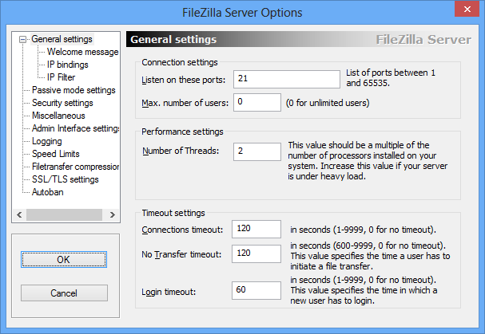
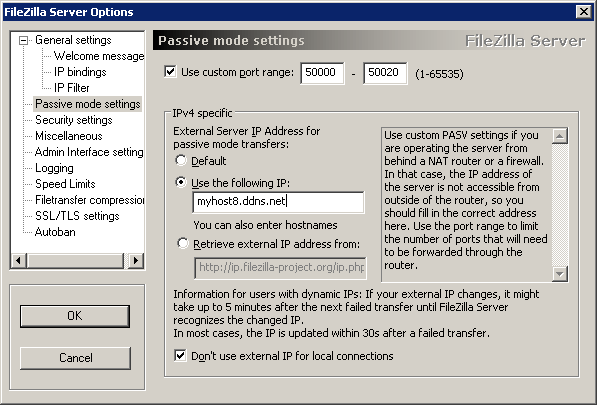

Использование нестандартных номеров портов для FTP-сервера совсем не обязательно, если провайдер не использует фильтрацию трафика, или вам безразлично сканирование портов на уязвимости и попытки подбора паролей. В данной статье, использование FTP-сервера с нестандартными TCP-портами, представлено в качестве одного из возможных вариантов. Настройки FileZilla Server выполняются через меню "Edit" -"Settings"

Окно General Settings предназначено для общих настроек FTP-сервера. В поле "Listen on this port" можно указать номер порта для входящих TCP-соединений. По умолчанию в данном поле установлено значение 21, и для использования нестандартного номера нужно указать выбранное значение, например - 12321. Использование нестандартного TCP-порта имеет некоторое неудобство, поскольку требует обязательное указание его значения при создании сеанса: ftp://myhost8.ddns.net - вид ссылки для случая с использованием стандартных номеров портов. ftp://myhost8.ddns.net:12321 - вид ссылки для случая с использованием номера порта 12321. Если сервер планируется использовать как с доступом из Интернет, так и в локальной сети, есть смысл оставить стандартное значение 21, а нестандартный номер порта использовать для подключений из Интернет, настроив перенаправление пакетов, пришедших на порт 12321 маршрутизатора, на порт 21 FTP-сервера в локальной сети. При такой настройке, для FTP-сессий внутри локальной сети указывать номер порта не нужно. Прочие параметры предназначены для настройки производительности и таймаутов сессий. Их можно оставить без изменений. Остальные разделы общих настроек можно также оставить по умолчанию: Welcome Message - текст, который передается клиенту при подключении. IP Binding - на каком сетевом интерфейсе будут ожидаться клиентские подключения. По умолчанию - на любом, но можно указать конкретный, например - 192.168.1.3. IP Filter - настройка правил фильтрации IP-адресов клиентов. По умолчанию - разрешены подключения для любых IP. Раздел Passive mode settings служит для настроек пассивного режима FTP и потребует изменения практически всех параметров, принятых по умолчанию.

Номера портов, которые будут использоваться для передачи данных в пассивном режиме, нужно задавать вручную, поскольку потребуется настройка маршрутизатора для перенаправления их на слушаемый сервером сетевой интерфейс. Поэтому нужно установить галочку на разрешение режима "Use custom port range" и задать диапазон - например от 50000 до 50020. Количество портов, слушаемых сервером, определяет предельное число одновременных сеансов передачи данных. Подраздел IPv4 specific определяет IP - адрес, который будет отправляться сервером в ответ на команду PASV. В данном случае, это должен быть не собственный IP сервера 192.168.1.3, а "белый IP" нашего подключения к Интернет. Поэтому нужно установить режим "Use the following IP" и вместо IP-адреса ввести имя, полученное при регистрации на сервисе динамического DNS - myhost8.ddns.net. В качестве альтернативы, можно использовать режим определения внешнего IP-адреса средствами проекта FileZilla, включив. "Retrieve external IP Address from:". Данный вариант можно выбрать в тех случаях, когда нет возможности использовать средство динамического DNS. Если предполагается использование FTP - сервера в своей локальной сети, нужно установить режим "Don't use external IP for local connections" (не использовать внешний IP-адрес для соединений внутри локальной сети) Остальные настройки сервера можно оставить без изменений или, при необходимости, выполнить позже:Security settings - настройки безопасности. По умолчанию - запрещены соединения, которые могут быть использованы для реализации DDoS-атак Miscellaneous - настройки размеров буферов и прочих параметров журналов и некоторых команд FTP. Admin Interface settings - настройки панели управления сервером. Можно указать сетевой интерфейс, номер слушаемого порта, IP-адреса, с которых разрешено подключение к панели управления и пароль. Logging - настройки журнала событий сервера. По умолчанию, запись в файл не выполняется. Speed Limit - настройки ограничения скорости передачи данных. По умолчанию - без ограничений. Filetransfer compression - настройки сжатия файлов при передаче. По умолчанию - без сжатия. SSL/TLS settings включение режима шифрования передаваемых данных. По умолчанию - без шифрования. Autoban - включение автоматической блокировки пользователей, подбирающих пароль для подключения. По умолчанию, автоматическая блокировка выключена.